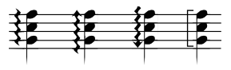
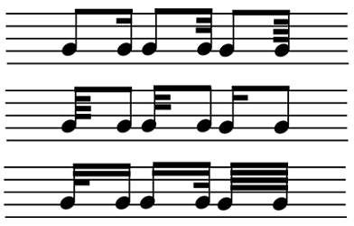
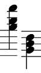
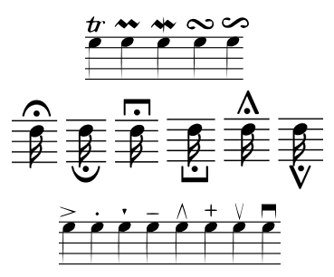
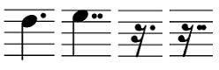
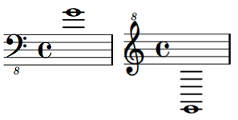
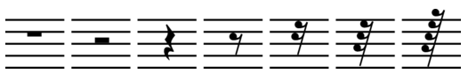
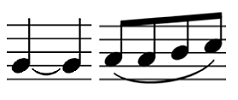
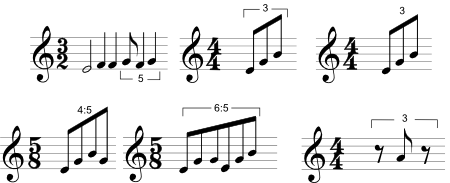

MyScript Cloud supports 64 languages, namely all the MyScript Builder languages.
MyScript Cloud supports the below shapes. These are just examples and the figures do not have to be precisely this size or form, but describe the characteristics for each type of shape.
The Math recognizer recognizes subsets of elements, within a spatial layout. The elements given below are examples of these math components: The list is almost exhaustive. This means that it can also recognize any type of scientific expression, including measurement units, chemical symbols and so on.
| Type of item | Example |
|---|---|
| Letters (Latin alphabet) | a b c d e f g h i j k l m n o p q r s t u v w x y z A B C D E F G H I J K L M N O P Q R S T U V W X Y Z |
| Digits | 0 1 2 3 4 5 6 7 8 9 |
| Mathematical symbols (including operators) | € $ £ ¥ ₩ ¢ ( ) < > [ ] { } ! # % & ? @ / \ | ∥ © ∂∅ ∇ ∞ ℂ ℕ ℚ ℝ ℤ + - ± × ÷ * ∘ · = ' , . : ; _ ← ↑ → ↓ ↔ ↕ ↖ ↗ ↘ ↙ ⇐ ⇑ ⇒ ⇓ ⇔ ⇕ ∀ ∃ ∄ ∈ ∉ ∋ ∌ ∩ ∪ ⊂ ⊃ ⊄ ⊅ ∼ ≃ ≠ ≡ ≢ ≤ ≥ ≪ ≫ ∝ ∠ ∏ ∑ ∫∮∧ √ |
| Greek symbols frequently used in mathematics | Γ Δ Ω α β γ δ ε η θ λ ν π ρ σ τ φ χ ψ ω ϕ µ |
It is also possible to recognize certain mathematical, chemical or scientific text-based terms. See below a list of most units, variables etc. that are recognizable by the math recognizer:
| Type of item | Example |
|---|---|
| International convention units (weight, depth, length, frequency, luminosity, dosage, pressure, etc. for many different domains: electricity, radiation, and so on) | km hm dam m dm cm mm µm nm pm fm ha in ft mi yd yds oz lb lbs dl cl ml µl kg hg dag dg cg mg µg ng pg ds cs ms µs gon tex Pr ua ha rad tr Hg sec amp div rot abs ns ps fs Pt Tt Gt Mt kt PHz THz GHz MHz kHz hHz daHz Hz dHz cHz mHz µHz nHz pHz fHz PN TN GN MN kN hN daN dN cN mN µN nN pN fN PNm TNm GNm MNm kNm hNm daNm dNm cNm mNm µNm nNm pNm fNm PJ TJ GJ MJ kJ hJ daJ dJ cJ mJ µJ nJ pJ fJ PW TW GW MW kW hW daW dW cW mW µW nW pW fW PWh TWh GWh MWh kWh hWh daWh Wh dWh cWh mWh µWh nWh pWh fWh PeV TeV GeV MeV keV heV daeV eV deV ceV meV µeV neV peV feV PPa TPa GPa MPa kPa hPa daPa Pa dPa cPa mPa µPa nPa pPa fPa Pbar Tbar Gbar Mbar kbar hbar dabar bar dbar cbar mbar µbar nbar pbar fbar PA TA GA MA kA mA µA nA pA fA PV TV GV MV kV mV µV nV pV fV PS TS GS MS kS mS µS nS pS fS PC TC GC MC kC mC µC nC pC fC PAh TAh GAh MAh kAh mAh µAh nAh pAh fAh PF TF GF MF kF mF µF nF pF fF PH TH GH MH kH mH µH nH pH fH PWb TWb GWb MWb kWb mWb µWb nWb pWb fWb PT TT GT MT kT mT µT nT pT fT PBq TBq GBq MBq kBq hBq daBq Bq dBq cBq mBq µBq nBq pBq fBq PGy TGy GGy MGy kGy hGy daGy Gy dGy cGy mGy µGy nGy pGy fGy PSv TSv GSv MSv kSv hSv daSv Sv dSv cSv mSv µSv nSv pSv fSv Pcd Tcd Gcd Mcd kcd hcd dacd cd dcd ccd mcd µcd ncd pcd fcd Plm Tlm Glm Mlm klm hlm dalm lm dlm clm mlm µlm nlm plm flm Plx Tlx Glx Mlx klx hlx dalx lx dlx clx mlx µlx nlx plx flx |
| Chemical elements | He Li Be Ne Na Mg Al Si Cl Ar Ca Sc Ti Cr Mn Fe Co Ni Cu Zn Ga Ge As Se Br Kr Rb Sr Zr Nb Mo Tc Ru Rh Pd Ag Cd In Sn Sb Te Xe Cs Ba Hf Ta Re Os Ir Pt Au Hg Tl Pb Bi Po At Rn Fr Ra Rf Db Sg Bh Hs Mt Ds Rg Cn Uut Uuq Uup Uuh Uus Uuo La Ce Pr Nd Pm Sm Eu Gd Tb Dy Ho Er Tm Yb Lu Ac Th Pa Np Pu Am Cm Bk Cf Es Fm Md No Lr |
| Mathematical terms (ratios, functions, geometry, etc.) | sin cos tan sinh cosh tanh arcsin arccos arctan cot coth min max arg argmin argmax csc deg det dim exp gcd hom inf sup lg ker lim liminf limsup ln log dx dy dz dt rad mol angle bessel mean median mod norm ceil conv cov diag erf fft floor Im Re inv perms pinv rand round sign size sort sqrt svd var |
| Scientific terms | parsec |
Any text items (for example, cos, sin, median, etc.) can be written in cursive text or in a handprinted style.
See below a non-exhaustive list of elements that can be recognized. Note that there is no need to handwrite staff lines: Staff position simply has to be specified through an appropriate API function.
| Type of item | Example |
|---|---|
| Accidentals |  |
| Arpeggiate chords |  |
| Bars |  |
| Beams |  |
| Chords |  |
| Clefs |  |
| Decoration symbols* |  |
| Dots |  |
| Key signatures |  |
| Ledger lines |  |
| Notes |  |
| Rests |  |
| Ties & slurs |  |
| Time signatures |  |
| Tuplets |  |
* Articulation marks, ornaments, fermatas and technical signs (up bow, stopped and down bow) are referred to as music decoration symbols in the API.